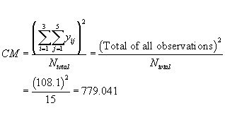
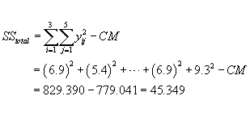
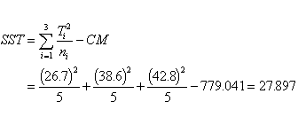

|
7.
Product and Process Comparisons
7.4. Comparisons based on data from more than two processes 7.4.2. Are the means equal?
|
|||
| Formulas for 1-way ANOVA hand calculations | Although computer programs
that do ANOVA calculations now are common, for reference purposes this
page describes how to calculate the various entries in an ANOVA table.
Remember, the goal is to produce two variances (of treatments and error)
and their ratio. The various computational formulas will be shown and
applied to the data from the previous example.
STEP 1 Compute CM, the correction for the mean.  The total SS = sum of suquares of all observations - CM  STEP 3 Compute SST, the treatment sum of squares. First we compute the total (sum) for each treatment.  Here we utilize the property that the treatment sum of squares plus
the error sum of squares equals the total sum of squares.
STEP 5 Compute MST, MSE and their ratio, F. MST is the mean square of treatments, MSE is the mean square of error
MST = SST / (k-1) = 27.897 / 2 = 13.949
where N is the total number of observations and k is the number of treatments. Finally, compute F as F = MST / MSE = 9.59 That is it. These numbers are the quantities that are assembled in the ANOVA table, that was shown before. |
||